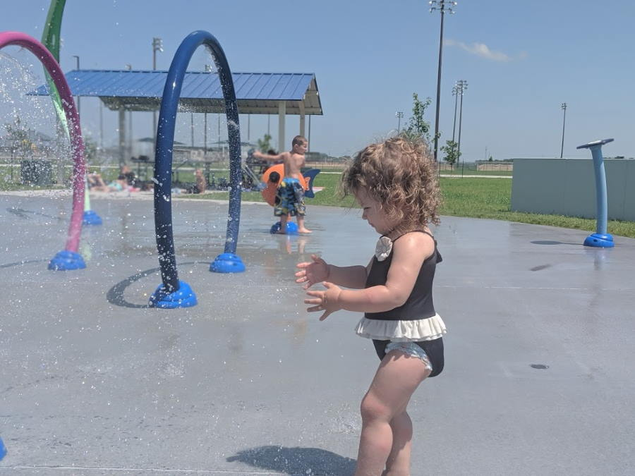

Early morning rise
We have started getting into a routine at this point. We had almost everything packed up and ready to go the night before. Abigail snuck out of the tent at 4:25AM and took a much needed shower. When she got back she boiled some water and made us all oatmeal for the road. It was a very tasty breakfast. Surprisingly both girls ate it without complaints! The first stop in our journey today was at a Splashpad in Grand Island, Nebraska.
For those keeping record, Abigail has had 2 showers since we have been road triping. I have had 0. I swear, I do not stink.
Journey to Grand Island
We basically followed the Missippi river up to the tip of Missouri, Iowa, and Nebraska. We had our first "close call" with an aggressive weather storm. I'll admit, I though it was a Tornado when I first saw it and kind of freaked out. It ended up being a crazy Thunderstorm that was moving very quickly. We were forutnate to drive past the edge of it, but we witnessed some crazy storm clouds and lightning strikes. You could see the sheets of rain falling from the Sky.
Mother nature is crazy!Before we hit Nebraska, we crossed over into Iowa for a few miles. We witnessed miles on miles of flooded land, include exits on the interstate that were closed due to the floods. Whole fields were under water, homes & equipment abandoned due to the water. Miles on miles of land just destroyed and under water. Truly a crazy sight. Abigail looked up some news papers, and this has been flooded since March 2019, a levy broke and the river flooded out the area. They keep getting rain, and its preventing it from fully draining.
 Hi Iowa!
No thank you
Hi Iowa!
No thank you
Nebraska
The first stop in Nebraska was at the local Walmart. We go through a lot of ice, probably 2-3 bags a day at least. Gotta have that frozen water! Usually we pick it up at Gas Stations, but we needed to stock up on some supplies anyways. Dinner, fruit, lunch stuff, etc.
I think we have been to a Walmart in every state we passed through (except Iowa)After we ate and got everything packed back up we headed off to the Splashpad. It was probably high 90s with no clouds in the Sky. We were baking alive, so this was a much needed break. While the girls played on the Splashpad, I worked on a previous days blog. In between writing I was on towel duty. Neither of the girls like getting their faces wet, so when it eventually happens they run over and ask for a towel to wipe their face. I'm a glorified towel boy when we go to splashpads.
Grand Island Neighborhood, super cute!  Thea at the Splashpad Jenna at the splashpad Grand Island Splashpad!After that we were back on the road heading to our camping destination. We ended up picking a place called Besseys Recreation Complex Camground, in Halsey NE. It was essentially a national forest, that had super cheap rental rates. Our electrical tent site was 11$. Can't pass that up.
We had to pose for a picture!There was only a few tent sites available, but they were spaced out throughout the campground. I think we drove around 7-9 times until we settled on a spot. It was near some ATV trails, but otherwise was in a pretty decent location. Not the most level ground, but I was able to dig a small hole to let the ladder sit on level ground.
We may of had to move the jeep after the Tent was setup, Didn't have a picture of that so enjoy this one.Dinner tonight was Speghetti & Meatballs, made by Abigail. It was surprisingly easy to make, and with a bit of tin foil it was fairly easy clean up. Everyone had multiple helpings! Go Abigail!
Yum!Everyone was ready for bed that night, but we opted for another Jeep Photo (can't have too many!).
Happy campers!Nebraka Sweet Water
I wanted to take a moment to address the title of this post, "That Sweet Nebraska Water". I'm picky when it comes to "tap" water. For those of you who know my background with well water growing up, you can understand why. At home we either drink from a seperate filtered water pitcher, or bottled water. Every place we have been to, I've drank their potable water. At this point in the trip, every place tasted like Chlorine or had a weird checmical flavor. My guess is they over-shock it to keep everyone safe.
The water from the refill station tasted like pure gold. I think I filled up our 2 gallon container 2-3 times that night, and once more before we left. I even refilled my water bottle several times when I was filling up the 2 gallon container. It was good. I still think about it sometimes when I drink the chlorine flavored stuff at the other campsites.
Maybe I'll swing by on the way home..